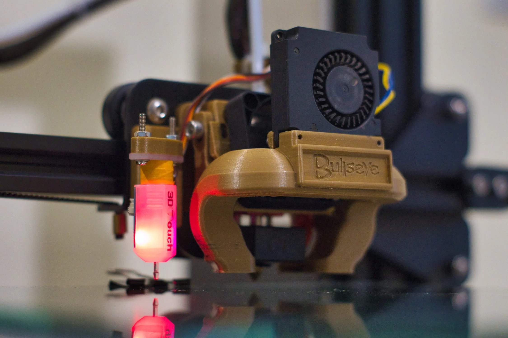
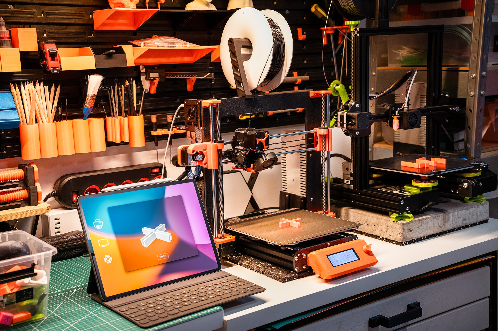

Contents
- About Technology
- Positive Impact
- Negative Impact
- Impact of Tech
- Overall Conclusion
Jan 29, 2024
Technology encompasses a broad field. In recent times we have
seen rapid advancement in the field of technology. When scientific knowledge is used in a
practical way it is known as technology. In every field and in our everyday life technology has made
some significant changes and has affected people's jobs/careers and has changed the way that we view
the world.
Technological advancement has given birth to mobile phones, printers, laptops, PCs and most
importantly, the internet. We cannot even fathom a world without internet and all of the above
mentioned technologies in today's time. Technology is an ever growing and ever flourishing industry
as it has become one of the core focuses of all humanity. We have seen the rise of big tech companies that
are dominating the market and this will continue to happen, specially with the rise of AI
(Artificial Intelligence). The rise of jobs and careers in tech field such as: Programmers,
Engineers, Developers, Designers etc are also growing very rapidly as the advancement of technology
takes place. It has become one of the most trending industries in the world and this will not stop any
time soon.
Printing technology has also become very essential to our lives. Printers are used in homes and
offices to create and print important document and files.
In conclusion, we understand that technology is growing very rapidly and if we cannot be a part of
this then we will definately be left behind. Our everyday lives is full of tech and we are very
dependent on it so it is very important that more research, development and regulation happens in
this field. Either way modern technology is here to stay and it will continue to evolve, so it is
important that we adapt accordingly to it.
Jan 29, 2024
As our everyday lives are filled with modern day technologies,
it is important that we understand the impact it has on us. The impact may be positive or negative,
so it is very important that we regulate these technologies accordingly. People nowadays are quick
to highlight the negative impact that technologies are having in our lives, but we have to
understand there are a lot of positives too, as technology is the only reason why our lives are so
better than the previous generation anyways.
The advancement of technology has made mailing, phone calling, communication, file/document sharing,
working etc a whole lot easier. We cannot even imagine the impact on our lives if these technologies
were to immediately vanish from our lives. It would be almost impossible to function regularly and
do our regular tasks as we are so used to these technologies.
The mobile phone, laptop, PCs are the most powerful devices ever as it has made so much possible.
People nowadays have built their careers on such technologies. The advancement of AI (Artificial
Intelligence) is now replacing man labour and this will continue to develop. So mundane tasks will
no longer be assigned and done by humans.
Even though technology can have it’s negatives, it’s immense positives are the reason for us to
continue researching and advancing technology as it will continue to better human lives and develop
our society as a whole.
Negative Impact
Jan 29, 2024
Negative impacts of technology
In the contemporary era, technology stands as the cornerstone of
human progress, propelling us into a future that once seemed
unimaginable. The dazzling array of innovations, from the internet to
artificial intelligence, has revolutionized the way we live, work, and
connect. However, amid the celebration of technological achievements,
it becomes imperative to critically examine the darker underbelly of
this digital revolution. Beneath the surface of convenience and
efficiency lies a tapestry of negative impacts that cast shadows on
various aspects of our lives. This essay endeavors to delve into the
adverse consequences of technology, shedding light on the often-overlooked challenges that
accompany the rapid march of innovation.
As the world becomes increasingly interconnected through the digital realm, a paradoxical
consequence
emerges - the rise of social isolation. The advent of smartphones, social media platforms, and
instant
messaging has transformed the dynamics of human interaction. While these tools offer unprecedented
connectivity, they also present a double-edged sword, contributing to the erosion of face-to-face
relationships. The allure of virtual communication often leads individuals to prioritize online
interactions
over real-world connections. Social media platforms, designed to bring people together,
paradoxically
contribute to a sense of isolation. Users may find themselves ensnared in the pursuit of online
validation, measuring their worth through likes and comments rather than genuine, meaningful
relationships.
The pervasive integration of technology into our daily lives has given rise to a formidable
challenge: the
invasion of privacy. In an era where information is both currency and commodity, individuals find
themselves navigating a landscape where their personal data is constantly under scrutiny. Social
media
platforms, while fostering connectivity, engage in extensive data harvesting, subjecting users to
targeted
advertisements and algorithmic profiling. Moreover, the proliferation of surveillance technologies
in
public and private spheres has blurred the boundaries between personal and public domains, raising
concerns about the extent of government intrusion. The commodification of personal information not
only jeopardizes individual autonomy but also exposes users to identity theft risks. As the digital
footprint becomes indelible, the erosion of anonymity and the lack of control over one's own
data
highlight the pressing need for ethical considerations and robust privacy safeguards in our
increasingly
interconnected world.
While technology propels us into a future of innovation, its environmental toll cannot be
overlooked.
The production, use, and disposal of electronic devices contribute significantly to environmental
degradation. The surge in electronic waste (e-waste) poses a substantial threat, containing
hazardous
materials that leach into soil and water, harming ecosystems and endangering human health.
Additionally, the massive energy consumption associated with data centers and the manufacturing
process exacerbates carbon emissions, contributing to climate change. The perpetual cycle of
upgrading
devices, coupled with short product lifecycles, further accelerates the environmental impact.
Addressing
these challenges demands a reevaluation of our consumption patterns, sustainable manufacturing
practices, and the development of eco-friendly technologies to mitigate the ecological repercussions
of
our digital age.
In conclusion, while technology has undeniably ushered in a new era of convenience and connectivity,
it
is imperative to recognize and navigate its negative impacts. From the erosion of personal privacy
to the
environmental toll of electronic waste, the consequences of our tech-driven lifestyle are
multifaceted.
Striking a balance between harnessing technological advancements for progress and mitigating their
adverse effects requires collective awareness, ethical considerations, and the implementation of
responsible policies. As we tread further into the digital age, addressing these challenges becomes
paramount to ensure a sustainable and harmonious future for humanity.
Jan 29, 2024
.png)
Impact of technology on daily life and printing businesses
In the tapestry of modern existence, technology stands as the warp and weft, intricately weaving its
threads into the fabric of our daily lives and industries. The digital age has ushered in
unprecedented
connectivity, redefining communication, access to information, and even the way we conduct
businesses. Simultaneously, the once-static landscape of printing businesses has undergone a
metamorphosis, adapting to the digital revolution. This essay delves into the dynamic interplay
between
technology, daily life, and the printing industry, exploring how innovation has become the driving
force
shaping our personal experiences and the business landscape alike.
The integration of technology into daily life has redefined the fabric of human existence,
transforming
the way individuals communicate, access information, and navigate their routines. This communication
revolution, fueled by the internet and mobile devices, has transcended geographical boundaries,
making
social media platforms, emails, and messaging apps are integral to daily interactions. Simultaneously,
information access has been revolutionized, with search engines and online databases providing
instantaneous access to vast amounts of information, reshaping how people gather knowledge for work,
education, or personal interests. The efficiency and convenience afforded by technology are evident
in
various aspects of daily life, from online banking and shopping to the integration of automation and
smart home devices that contribute to increased efficiency in managing routines. Entertainment has
evolved significantly, with streaming services, gaming platforms, and virtual reality offering
diverse and
personalized content, blurring the lines between traditional and digital experiences. Moreover, the
recent shift towards remote work and online learning underscores technology's role in altering
traditional work and educational structures, with video conferencing, collaborative tools, and
digital
platforms becoming indispensable in facilitating remote communication and learning.
In parallel with its impact on daily life, technology has catalyzed a profound transformation within
the
landscape of printing businesses. This evolution is epitomized by the digital printing revolution,
where
traditional methods have given way to dynamic digital technologies. Businesses now harness on-demand
printing, variable data printing, and personalized marketing materials, resulting in reduced
costs and heightened flexibility to cater to diverse customer needs. The infusion of automation and
efficiency into printing workflows through computer-to-plate systems and digital file management has
significantly streamlined production cycles, decreasing turnaround times and enhancing overall
operational efficiency. Furthermore, the digital era has ushered in an unprecedented era of
personalization and customization, with variable data printing empowering businesses to tailor
content
for individual recipients, thereby amplifying the effectiveness of marketing campaigns. The
integration
of online platforms and e-commerce has become integral, enabling printing businesses to broaden
their
reach, allowing customers to submit orders, preview designs, and track printing progress online,
thereby
contributing to a more streamlined and customer-centric experience. Amid this technological shift,
environmental considerations are gaining prominence, with the industry increasingly adopting eco-
friendly inks and materials to address environmental concerns and promote sustainable
practices.
The realm of printing technology has witnessed a diverse array of innovations, each catering to
specific
needs and applications. Traditional inkjet and laser printers dominate office spaces, efficiently
producing
documents and images with precision. For specialized applications like photography, high-quality
photo
printers ensure the faithful reproduction of vibrant and detailed images. Additionally, large-format
printers are utilized for producing banners, posters, and architectural plans, offering versatility
in
catering to diverse printing requirements. In recent years, the emergence of 3D printing technology
has
revolutionized manufacturing processes across various industries. Beyond crafting prototypes and
intricate models, 3D printing has ventured into the realm of aerospace engineering, with companies
like
SpaceX employing additive manufacturing techniques to build components for rockets. The precision
and customization capabilities of 3D printing have streamlined the production of intricate and
structurally sound parts, contributing to the rapid advancement of space exploration.
In conclusion, the intricate web of technology threads its way through the fabric of our daily lives
and
the diverse landscape of printing businesses. From the convenience of communication and information
access to the transformative capabilities of 3D printing technology in building rockets, innovation
continues to shape and redefine our experiences. The fusion of traditional inkjet and laser printers
with
emerging technologies like 3D printing exemplifies the dynamic nature of the technological
landscape,
bringing about enhanced efficiency, customization, and precision in various domains. As we navigate
this digital era, striking a balance between the technological intricacies of daily life and the
ever-evolving
capabilities of printing technologies underscores the constant interplay between innovation and the
human experience.
Jan 29, 2024
What conclusion can we draw from studying the impact of technology?
In the tapestry of human progress, technology has woven intricate patterns, leaving an indelible
mark
on the fabric of our daily lives and the landscape of businesses, notably the printing industry. The
positives are glaring: a communication revolution that has bridged vast distances, information
access at
our fingertips, and innovations like 3D printing transforming manufacturing. The negatives, however,
cast shadows on this digital frontier, from privacy invasion concerns to environmental
impacts.
In daily life, technology manifests as a double-edged sword. On one hand, it has redefined
communication, granting unprecedented connectivity through social media, emails, and instant
messaging. Information has become a currency accessible to all, empowering individuals to learn,
work,
and engage with the world in ways unimaginable a few decades ago. Yet, the allure of these digital
realms has ushered in social isolation, with the virtual world often overshadowing real-world
connections. The constant barrage of information has also given rise to information overload,
challenging our ability to discern relevance in a sea of data.
The positive impact of technology on the printing industry is exemplified by the digital printing
revolution. Traditional methods have seamlessly integrated with innovative technologies, allowing
businesses to produce personalized and efficient print materials. Automation has streamlined
workflows, and the rise of online platforms has expanded customer reach, transforming the industry
into a more dynamic and responsive ecosystem. However, this metamorphosis comes with its
challenges, including the environmental toll of electronic waste and the necessity for sustainable
practices.
Moreover, the advent of 3D printing has revolutionized manufacturing processes, pushing the
boundaries of what was once deemed impossible. Companies like SpaceX leverage this technology to
construct intricate components for rockets, showcasing the profound impact technology can have on
pushing the frontiers of exploration and industry.
Nevertheless, the negatives of technology cannot be ignored. Privacy invasion looms large as
personal
data becomes a commodity, with ethical concerns arising from extensive surveillance and data
breaches. The environmental impact of technology, from electronic waste to the carbon footprint of
data centers, poses challenges that demand urgent attention.
In conclusion, the impact of technology on our lives and businesses is a multifaceted tapestry of
progress and challenges. It has reshaped the way we communicate, work, and live, with both positive
and negative implications. Striking a balance between harnessing the benefits of innovation and
mitigating the adverse effects requires a collective effort. As we navigate this digital age, it
becomes
imperative to tread carefully, ensuring that the positive influence of technology continues to
enrich our
lives while safeguarding against its potential pitfalls.
Find More
New generation of printers available for purchase at printex webstore right now!
Our Products >